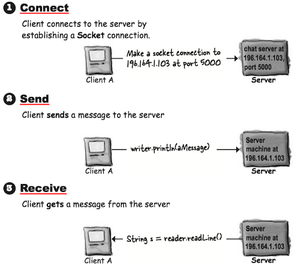
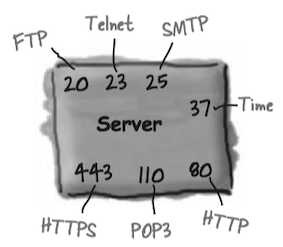
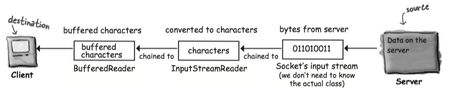
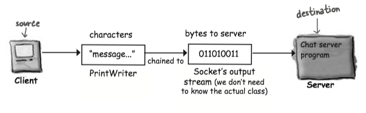
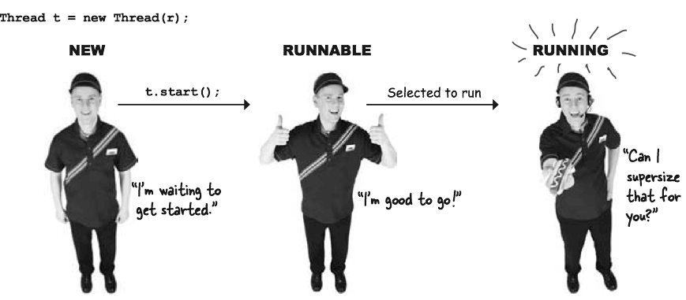
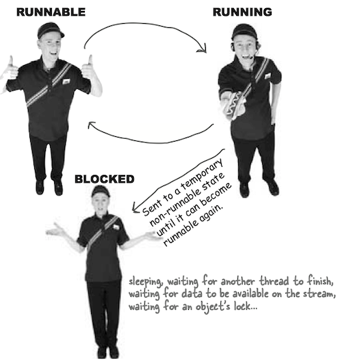
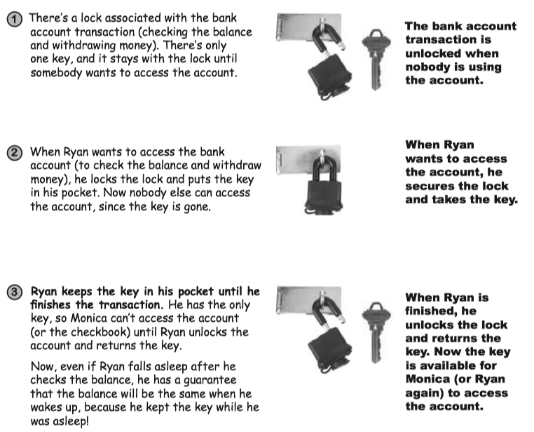

Chapter 15 Networking and Threads¶
All the low-level networking details are taken care of by classes in the
1 Socket Connections¶

Make a Network Socket Connection¶
To connect to another machine, We need a
To make a Socket connection, you need to know two things about the server: who it is, and which port it’s running on. In other words, IP address and TCP port number.
// 196.164.1.103 is the IP address for the sever // 5000 is TCP port number Socket chatSocket = new Socket("196.164.1.103", 3000);
A TCP port is just a 16-bit number that identifies a specific program on the server.
The TCP port numbers from 0 to 1023 are reserved for well-known services. Don’t use them for your own server programs!
Well-known TCP port numbers for common server applications:

Reading/Writing From/To a Socket¶
To read data from a
To communicate over a
- Make a
Socket connection to the serverSocket chatSocket = new Socket("127.0.0.1", 3000);
- Make an
InputStreamReader chained to theSocket ’s low-level (connection) input streamInputStreamReader stream = new InputStreamReader(chatSocket.getInputStream());
- Make a
BufferedReader and read!BufferedReader reader = new BufferedReader(stream); String message = reader.readLine();

To write data to a Socket, use a
- Make a
Socket connection to the server::Java Socket chatSocket = new Socket("127.0.0.1", 5000);
- Make an
PrintWriter chained to theSocket ’s low-level (connection) input streamPrintWriter writer = new PrintWriter(chatSocket.getOutputStream());
- Write (print) Something!
writer.println("message to send); writer.print("another message");

Writing a client¶
- Client connects to the server and gets an input stream from it
Socket socket = new Socket("127.0.0.1", 3000)InputStreamReader streamReader = new InputStreamReader(socket.getInputStream());BufferedReader reader = new BufferedReader(streamReader)
- Client reads a message from the server
message = reader.readLine();
A simple demo program, which reads index.html from my personal blog "larryim.cc", is illustrated below. The format of HTTP Request is discussed in CSAPP.
import java.io.BufferedReader; import java.io.InputStreamReader; import java.io.PrintWriter; import java.net.Socket; public class MyBlog { public void http_request(){ try{ Socket s = new Socket("192.30.252.153", 80); InputStreamReader streamReader = new InputStreamReader(s.getInputStream()); BufferedReader br = new BufferedReader(streamReader); //注意换行符是\r\n writer.println("GET /index.html HTTP/1.0 \r\n Host: larryim.cc \r\n \r\n "); String line = null; while ((line= br.readLine())!= null){ System.out.println(line); } br.close(); } catch (Exception ex){ ex.printStackTrace(); } } public static void main(String[] args){ MyBlog client = new MyBlog(); client.http_request(); } }
Writing a Simple Server¶
- Server application makes a ServerSocket, on a specific port
ServerSocket serverSock = new ServerSocket(4242);
- Client makes a Socket connection to the server application
Socket sock = new Socket(“190.165.1.103”, 4242);
- Server makes a new Socket to communicate with this client
Socket sock = serverSock.accept();
2 Threads¶
To make a thread, make a
A thread is a separate thread of execution. That means a separate stack. Remember, Java is just a process running on your underlying OS. The JVM switches between the new thread (user thread) and the original main thread, until both threads complete.
Launching a thread¶
- Make a
Runnable object (the thread’s job)Runnable threadJob = new MyRunnable();Runnable is an interface you’ll learn about on the next page. You’ll write a class that implements theRunnable interface, and that class is where you’ll define the work that a thread will perform. In other words, the method that will be run from the thread’s new call stack.
- Make a
Thread object (the worker) and give it aRunnable (the job)Thread myThread = new Thread(threadJob);- Pass the new
Runnable object to theThread constructor. This tells the newThread object which method to put on the bottom of the new stack—theRunnable ’srun() method.
- Start the Thread
myThread.start();- Nothing happens until you call the
Thread ’sstart() method. That’s when you go from having just aThread instance to having a new thread of execution. When the new thread starts up, it takes theRunnable object’srun() method and puts it on the bottom of the new thread’s stack.
Runnable interface¶
To make a job for your thread, implement the
// Runnable is in the java.lang package, so you don't need to import it. public class RunThreads implements Runnable { @Override // Runnable has only one method to implement: public void run() (with no arguments) // This is where you put the JOB the thread is suposed to run. // This is the method that goes at the bottom of the new stack() public void run() { for (int i=0; i<20; i++){ String threadName = Thread.currentThread().getName(); System.out.println(threadName + " is running."); } } public static void main(String[] args){ RunThreads jobs = new RunThreads(); // Pass the new Runnable instance into the new Thread constructor. // This tells the thread what method to put on the bottom of the new stack. // In other words, the first method that the new thread will run. Thread threadA = new Thread(jobs); Thread threadB = new Thread(jobs); threadA.setName("Thread A"); threadB.setName("Thread B"); // You won't get a new thread of execution until you call start() on the Thread instance. threadA.start(); threadB.start(); } }
The three states of a new thread:

Once the thread becomes runnable, it can move back and forth between runnable, running, and an additional state: temporarily not runnable (also known as 'blocked').
Typically, a thread moves back and forth between runnable and running, as the JVM thread scheduler selects a thread to run and then kicks it back out so another thread gets a chance.

A thread scheduler can move a running thread into a blocked state, for a variety of reasons. See Understanding JVM.
Thread Scheduler¶
The thread scheduler makes all the decisions about who runs and who doesn’t.
Most importantly, there are no guarantees about scheduling! So DO NOT base your program's correctness on the scheduler working in a particular way! You multi-threaded program must work no matter how the thread scheduler behaves.
The thread's
Note
Another way of making a thread is to, make a subclass of
Lock¶
The lock works like this:

Use the
Every Java object has a lock. A lock has only one key. Most of the time, the lock is unlocked and nobody cares. But if an object has
3 Example: A Simple ChatApp¶
package com.headfirstjava.chat; import javax.swing.*; import java.awt.*; import java.awt.event.ActionEvent; import java.awt.event.ActionListener; import java.io.*; import java.net.Socket; public class ChatClient { JFrame frame; String out_message; // message sent to a server ScrollPane scroll; JTextArea inMessage; // incoming message from a server JTextField outTextField; JButton button; // a button to send message PrintWriter writer; BufferedReader reader; Thread backgroundJob = new Thread(new ReceiveMessage()); private void establishConnection() { try { Socket socket = new Socket("127.0.0.1", 3000); writer = new PrintWriter(socket.getOutputStream()); InputStreamReader streamReader = new InputStreamReader(socket.getInputStream()); reader = new BufferedReader(streamReader); } catch (IOException ex) { ex.printStackTrace(); } } private void gui() { frame = new JFrame("Ludirously Simple Chat Client"); inMessage = new JTextArea(7, 14); outTextField = new JTextField(18); button = new JButton("Send"); button.setSize(300, 40); scroll = new ScrollPane(); scroll.add(inMessage); inMessage.setLineWrap(true); frame.setDefaultCloseOperation(JFrame.EXIT_ON_CLOSE); frame.getContentPane().add(BorderLayout.NORTH, scroll); frame.getContentPane().add(BorderLayout.WEST, outTextField); frame.getContentPane().add(BorderLayout.EAST, button); button.addActionListener(new ButtonListener()); frame.setSize(300, 200); frame.setVisible(true); } class ButtonListener implements ActionListener { @Override public void actionPerformed(ActionEvent e) { out_message = outTextField.getText(); outTextField.setText(""); outTextField.requestFocus(); writer.println(out_message); writer.flush(); } } class ReceiveMessage implements Runnable { @Override public void run() { while (true) { String line = null; try { while ((line = reader.readLine())!= null) { inMessage.append(line); } } catch (IOException ex) { ex.printStackTrace(); } }// end while } // end run } // end class public void start() { gui(); establishConnection(); backgroundJob.start(); } public static void main(String[] args){ ChatClient client = new ChatClient(); client.start(); } }
package com.headfirstjava.chat; import java.io.*; import java.net.*; import java.util.*; public class ChatServer { ArrayList clientOutputStreams; public class ClientHandler implements Runnable { BufferedReader reader; Socket sock; public ClientHandler(Socket clientSocket) { try { sock = clientSocket; InputStreamReader isReader = new InputStreamReader(sock.getInputStream()); reader = new BufferedReader(isReader); } catch (Exception ex) { ex.printStackTrace(); } } public void run() { String message; try { while ((message = reader.readLine()) != null) { System.out.println("read " + message); tellEveryone(message); } } catch (Exception ex) { ex.printStackTrace(); } } } public static void main(String[] args) { new ChatServer().go(); } public void go() { clientOutputStreams = new ArrayList(); try { ServerSocket serverSock = new ServerSocket(3000); while(true) { Socket clientSocket = serverSock.accept(); PrintWriter writer = new PrintWriter(clientSocket.getOutputStream()); clientOutputStreams.add(writer); Thread t = new Thread(new ClientHandler(clientSocket)); t.start(); System.out.println("got a connection"); } } catch (Exception ex) { ex.printStackTrace(); } } public void tellEveryone(String message) { Iterator it = clientOutputStreams.iterator(); while (it.hasNext()) { try { PrintWriter writer = (PrintWriter) it.next(); writer.println(message); writer.flush(); } catch (Exception ex) { ex.printStackTrace(); } } } }